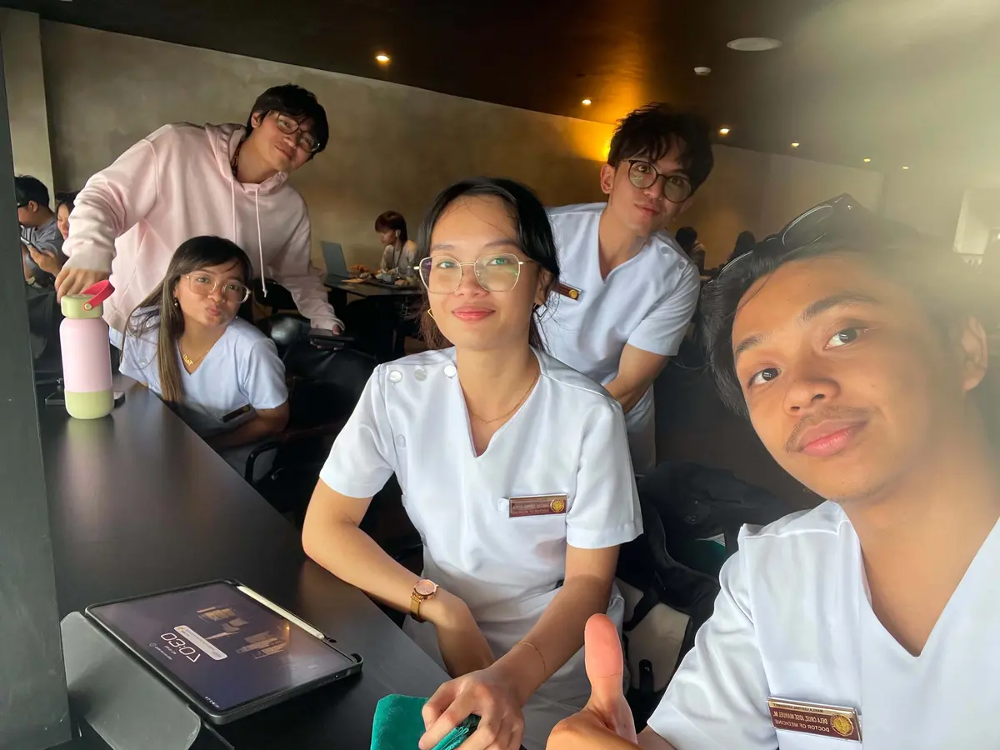
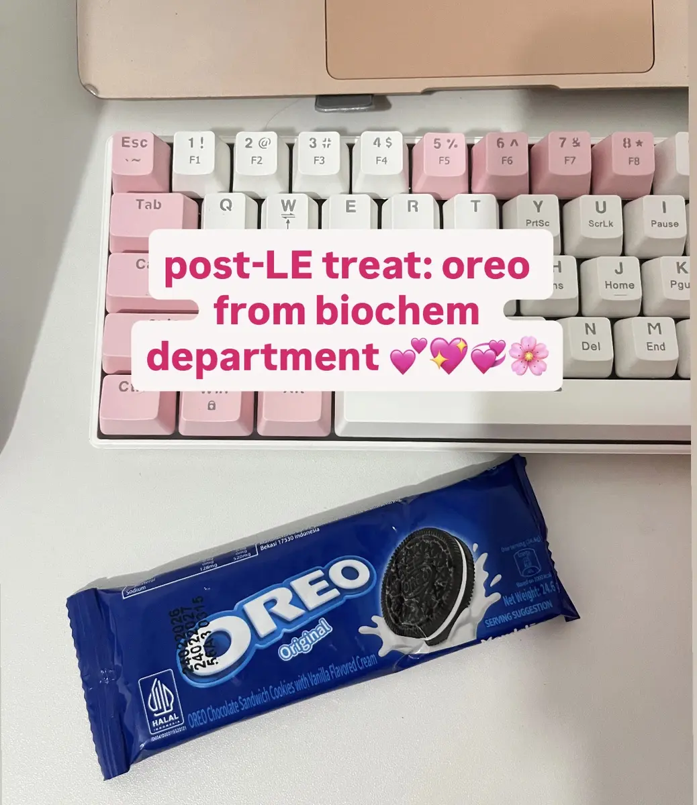
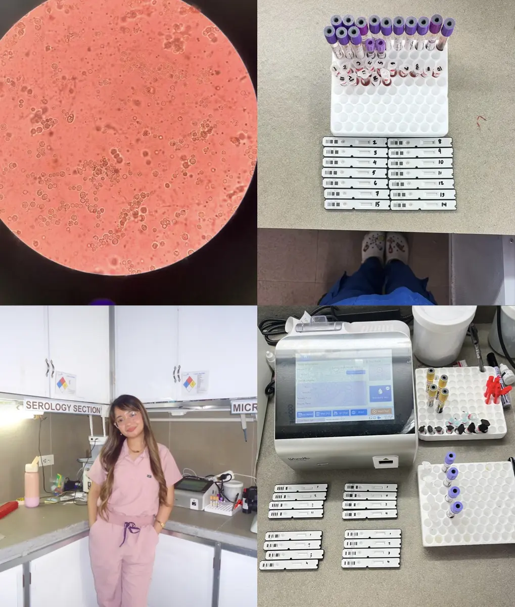
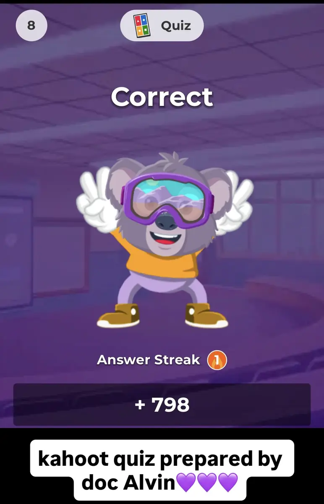
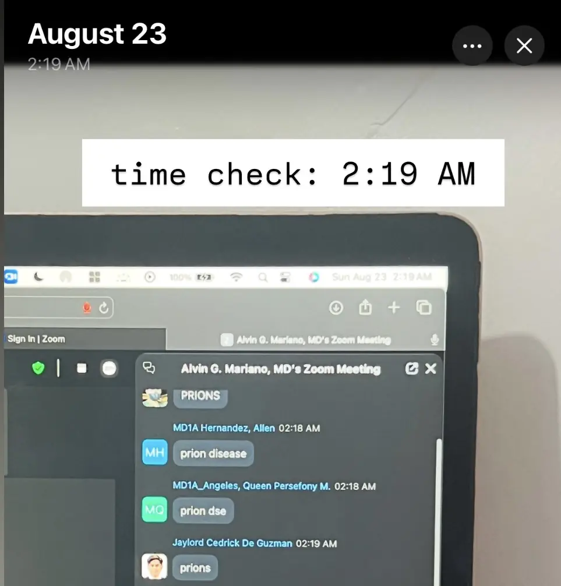

Bachelor of Science in Medical Laboratory Science
Our Lady of Fatima University, Valenzuela
A scientific foundation built on accuracy, analysis, and responsibility.Originally from Subic, Zambales
I am Angelica Faith B. Idanan, a Registered Medical Technologist and a first-year medical student.
I earned my Bachelor of Science in Medical Laboratory Science from Our Lady of Fatima University in Valenzuela and successfully passed the Medical Technologist Licensure Examination. Working for a year as a Chief Medical Technologist gave me valuable experience in laboratory medicine, patient care, and collaboration within a healthcare setting.
That experience strengthened my appreciation for accurate diagnosis and compassionate care. I chose to pursue Doctor of Medicine to connect my foundation in laboratory science with my goal of serving patients more fully as a physician.
Foundations
Our Lady of Fatima University, Valenzuela
A scientific foundation built on accuracy, analysis, and responsibility.Manila Central University College of Medicine
Expanding laboratory knowledge into clinical understanding and compassionate care.One journal. Two seasons of growth.
Choose a term to explore my lessons and the moments behind them.
Viewing Midterms · 2026
Field notes
Each experience represents another layer of my formation, connecting professional responsibility, scientific understanding, and compassionate patient care.
My year in laboratory practice taught me that every result carries responsibility. Accuracy, patient safety, and teamwork are not merely abstract standards. They directly shape the quality of care each patient receives.
Working closely with patients and healthcare professionals also strengthened my desire to understand the clinical story behind every laboratory value.
Long hours of reviewing, sharing notes, explaining difficult concepts, and encouraging one another made the demands of medicine feel lighter.
Between coffee, stressful nights, laughter, and small victories, I learned that teamwork and perseverance are also part of becoming a physician.



Prelim chapters
Select an entry to open the full reflection.
Our introduction to Biochemistry helped me realize that the subject is more than memorizing chemical reactions and pathways. It explains the processes that allow the body to function and helps connect scientific concepts with patient care.

I initially struggled with Water and pH because of the different concepts and equations. Eventually, I understood how water, buffers, and pH are essential in maintaining the body’s homeostasis. Changes in pH and fluid balance can occur in dehydration, vomiting, diarrhea, and acid-base disorders, making these concepts important in understanding and managing patients.
As a former medical technologist, I appreciate how Biochemistry helps me connect laboratory results with what is happening inside the patient’s body. This topic reminded me that a strong foundation in Biochemistry will help me understand diseases and make better clinical decisions in the future.
I also enjoyed our Kahoot activity. It made the discussion more engaging, tested what I had learned, and showed me which concepts I still needed to review. It reminded me that studying can be both challenging and enjoyable.
Taking Quiz 1 and Quiz 2 was challenging but meaningful. I struggled with Quiz 1 because I was still adjusting to Biochemistry and learning how to approach the questions, but passing Quiz 2 showed me that my efforts were beginning to pay off.
This experience reminded me that struggling with a topic does not mean I cannot understand it. It encouraged me to study more consistently, focus on understanding rather than memorizing, and learn from my mistakes. Passing Quiz 2 gave me the confidence and motivation to keep improving as I continue my journey in medicine.
This SGD taught me to look at how a patient’s symptoms and body processes are connected. Vomiting and diarrhea may appear simple, but when they continue, they can lead to dehydration, electrolyte imbalance, and disturbances in acid-base balance.
I also learned how metabolic changes can affect the respiratory system as the body tries to compensate and maintain a normal pH.
What I appreciated most was applying our classroom concepts to an actual patient case. It helped me understand that the signs and symptoms we observe are often connected to underlying physiological changes. The activity taught me to view the body as a whole and recognize how different systems work together to maintain balance.
Our group activity placed us in a doctor-patient scenario and allowed us to practice communication in an interactive, realistic way.
I learned the importance of open-ended questions because they encourage patients to share more about their symptoms, concerns, and experiences. This gives doctors a clearer understanding of the patient’s condition while building communication and trust. The activity helped me appreciate how effective communication contributes to better assessment and care.
This SGD became a self-directed learning activity because of the class suspension. As a former medical technologist, I was happy to connect my laboratory experience with what we were learning in Biochemistry.
The discussion on anemia and iron reminded me of working with CBC results and interpreting hemoglobin, hematocrit, and red blood cell indices. What made the activity more meaningful was learning the biochemistry behind these values. Hemoglobin and myoglobin helped me understand oxygen transport and the role of iron in protein structure and function.
Before, I often thought that low hemoglobin mainly suggested iron deficiency. Now, I understand that anemia is more complex and that iron is only one part of the picture. Parameters such as hemoglobin, hematocrit, MCV, and MCH can provide clues about the underlying cause. A CBC is not simply a set of numbers. It offers important evidence about what may be happening inside the body.
Filming our communication skills video showed me how powerful open-ended questions can be during patient evaluation.
Instead of limiting patients to simple yes or no answers, open-ended questions encourage them to freely share their symptoms, concerns, and experiences. This helps doctors gather more complete and accurate information while making patients feel heard and understood.
Labster was not completely new to me because I had encountered similar virtual laboratory activities during my undergraduate studies. Experiencing it again as a medical technologist gave me a new perspective.
Working in an actual laboratory taught me the importance of proper procedures, accuracy, and understanding the principles behind every test.
Although we only had an orientation and had not yet used Labster for our Biochemistry lessons, I became curious about how it could complement my laboratory background. Virtual simulations can help us visualize biochemical processes that cannot be directly observed during routine testing, bridging the concepts discussed in lectures with their practical applications.
This lesson helped me understand how amino acids, peptides, and proteins perform essential functions in the body and in medicine.
I found it overwhelming to memorize the different amino acids, particularly their structures and properties. I also struggled with determining protein primary structures because the process required careful understanding and analysis. Despite these challenges, I learned that amino acids are the building blocks of proteins and that their sequence affects protein structure and function. As a future physician, I know this knowledge matters because abnormalities in proteins can contribute to disease. The experience reminded me that struggle is part of learning, and consistent practice will help me improve.
I struggled with several concepts, especially the determination of protein primary structure, but I worked through the difficulty and passed Quiz 4.
This experience reminded me that proteins are essential in medicine because they function as enzymes, hormones, antibodies, and many other vital molecules. Passing the quiz strengthened my confidence and showed me that even when a topic is challenging, consistent effort and genuine understanding can help me improve.
Doc Alvin generously dedicated his time to reviewing us and finishing our lessons so we could prepare for our examinations.

It was my first time attending a class until almost 2:30 AM, and I was one of the students who stayed until the end. I felt proud that I remained despite being tired, and I deeply appreciated Doc Alvin’s commitment to ensuring that we understood the lessons. The experience reminded me that a teacher who genuinely cares can make a meaningful difference in the journey of future doctors.
This discussion helped me understand the roles of hemoglobin and myoglobin beyond the numbers I usually encountered in laboratory results.
As a former medical technologist, I was already familiar with hemoglobin through CBCs and its importance in assessing a patient’s condition. Learning its biochemical structure, oxygen-binding properties, and relationship with myoglobin gave me a deeper appreciation of how these proteins function.
Hemoglobin is not simply a reported value. It is a complex protein that transports oxygen from the lungs to the tissues and helps carry carbon dioxide back to the lungs. Understanding how pH and oxygen affinity affect hemoglobin helped me connect biochemical properties with physiological function. Learning about myoglobin also showed me how oxygen is stored and made available in muscle tissue during increased demand.
What I appreciated most was connecting the laboratory knowledge I already had with the biochemical and physiological processes beneath it. Behind every laboratory result is a process happening within the body, and these processes are essential in maintaining oxygen supply and supporting normal cellular activity.
As the preliminary examination approached, I could feel the pressure and anxiety building. After our Histology prelims, we attended an online review from around 5:00 PM until 11:00 PM.
Although I was exhausted and stressed, I was grateful to Doc A for continuing to guide us through the important lessons. I knew that every effort mattered.
The night became more memorable because my friends stayed up and studied with me until the exam. It was tiring, but knowing I was not alone gave me the motivation to continue. Medicine can be difficult, but people who support and encourage us make the hardest moments lighter. I felt proud of myself for pushing through despite the exhaustion.
One of the greatest lessons Biochemistry has taught me is that I cannot always control how difficult something will be, but I can control how I respond to it.
I may not understand a topic on the first try. I may answer questions incorrectly or have days when I feel tired and discouraged. But I am learning to stand up again, review what I missed, ask questions, and try once more. Every mistake has become an opportunity to identify what I still need to improve.
Most importantly, Biochemistry is teaching me how to fight. Not against the subject, but against the part of myself that tells me to give up whenever things become difficult. I am learning to be patient with myself and understand that progress does not always mean earning the highest score.
Sometimes progress is opening my notes again after a disappointing exam. Sometimes it is choosing to study even when I am exhausted. Sometimes it is simply telling myself, “I will try again tomorrow.”
My long examination and preliminary examination experiences challenged my confidence, but they also taught me to keep improving, learn from my mistakes, and understand each lesson more deeply. Every setback can become an opportunity to return stronger.
A memorable part of our examinations was receiving pencils and Oreos from the Biochemistry Department. It was a simple but thoughtful reminder that our professors understood the pressure and were supporting us through it.
I may be struggling now, but I will keep moving toward the physician I hope to become.Midterms / 2026 · Introduction
My midterm journey in Biochemistry taught me that the lessons we study are more than just pathways, enzymes, and chemical reactions. Although I struggled with topics such as glycolysis, the citric acid cycle, glycogen metabolism, gluconeogenesis, and the pentose phosphate pathway, I gradually realized how important they are in understanding what happens inside the human body. These processes help explain how the body produces energy, maintains blood glucose levels, and protects cells from oxidative damage. In clinical practice, this knowledge is essential in understanding conditions such as diabetes mellitus, hypoglycemia, and G6PD deficiency.
Despite the challenges of balancing academics and personal struggles, I continued to do my best. My experiences reminded me that becoming a physician requires patience, perseverance, and a willingness to learn from difficulties. The virtual laboratory activities also allowed me to appreciate how biochemical concepts connect to laboratory results that help physicians assess and diagnose patients. As a former Medical Technologist, I became more aware of how laboratory findings and biochemical principles work together in clinical decision-making.
A fresh page. A little more energy.
The learning log / Chapters 11–20
Select a chapter to read my full reflection.
We had our online classes today and we had a discussion about Bioenergetics: The role of ATP. Learning about bioenergetics helped me understand how our bodies convert energy from the food we eat into ATP, which serves as the main energy currency of our cells. ATP provides energy for essential cellular activities, including muscle contraction, active transport across cell membranes, and the synthesis of important substances. I learned that energy from nutrients is used to produce ATP, mainly through oxidative metabolism, allowing our cells to continuously perform their functions. As a medical student, I can relate this lesson to my personal experience of feeling tired and overwhelmed by exams, quizzes, and deadlines. I realized that just as our cells need a continuous supply of energy to function properly, we also need to take care of ourselves by eating well, getting enough rest, and managing our energy. Just as ATP sustains essential processes in our bodies, having a clear purpose helps me stay motivated to continue my medical journey and become a doctor who can make a difference in the lives of others.
I find it amazing that our bodies are constantly working to produce energy and protect themselves, even when we are busy studying or sleeping. Sometimes, I feel like my brain is doing its own version of biologic oxidation during exam week. One thing I found interesting about biologic oxidation is how our bodies can perform so many chemical reactions without us even noticing. I learned that oxidation involves the loss of electrons, while reduction involves the gain of electrons by another substance. I also learned that different enzymes have specific roles in keeping our bodies functioning properly. This lesson reminded me that, just like our cells need protection from harmful substances, we also need to protect ourselves from too much stress and exhaustion. I realized that taking breaks and getting enough rest are not signs of laziness but important ways to care for ourselves. After all, even our cells work hard, but they also have systems to keep everything in balance.
Among the topics we discussed, I found the respiratory chain and oxidative phosphorylation more interesting because it showed me how our cells work like tiny power plants. I learned that the electron transport chain takes place in the inner mitochondrial membrane, where electrons from NADH and FADH₂ pass through different protein complexes. The energy released is used to pump protons across the membrane, creating a gradient that drives ATP synthase to produce ATP. I also learned that oxygen acts as the final electron acceptor, making it essential for this process. What made this topic even more enjoyable was how lively and fun the PowerPoint presentation looked. As a visual learner, I find colorful diagrams and illustrations more effective than simply reading long paragraphs. Seeing the process presented visually made it easier for me to follow the movement of electrons and understand how ATP is produced. Sometimes, a little color and creativity can make even the most complicated topics easier to understand and remember.
I never really thought about what happens to the food I eat after a meal until we discussed metabolism and metabolic fuels. I learned that carbohydrates provide a readily available source of energy, fats serve as long-term energy reserves, and proteins help build and repair body tissues. Our bodies can also adjust how they use these fuels depending on whether we have just eaten or have gone several hours without food. It’s amazing how our bodies have their own backup system to keep everything running .
Before discussing this topic, I thought carbohydrates were simply sugars that provide energy. However, learning about saccharides of physiologic significance helped me understand that carbohydrates come in different forms and serve various functions in our bodies. I found it interesting that glucose serves as an important energy source for our cells, while glycogen acts as an energy reserve that the body can use when needed. It reminded me of my eating habits, especially during exam week when I crave sweets to keep myself awake while studying. Sometimes, I feel like my brain is begging for a quick glucose boost just to get through another chapter.
Honestly, memorizing all the intermediates and enzymes sometimes feels like a cycle of its own. Thankfully, doc A gave us the mnemonic Can I Keep Selling Sweet For Money Officer. Just when I think I’ve memorized everything, I forget one step and have to start all over again. But learning the purpose behind each reaction helps me appreciate the topic beyond just memorization.
Keeping track of all the enzymes, reactions, and ATP yields sometimes makes me feel like my brain is going through glycolysis just to survive biochemistry. I used to think that eating something sweet was just a quick way to get energy, but learning about glycolysis and the oxidation of pyruvate helped me understand what actually happens inside our bodies. I learned that glycolysis takes place in the cytoplasm, where one glucose molecule is broken down into two pyruvate molecules, producing a net gain of 2 ATP and 2 NADH. When oxygen is available, pyruvate enters the mitochondria and is converted into acetyl-CoA, which then enters the citric acid cycle.
This topic reminded me of how I try to save my energy during busy exam weeks, although sometimes my only plan is to drink coffee and hope for the best. Learning about glycogen made me realize how important it is to have energy reserves, not just for our bodies but also in our daily lives. I found it interesting to learn how our bodies have their own way of storing extra energy for later use. Glycogen serves as the storage form of glucose, mainly in the liver and skeletal muscles. I learned that glycogenesis is the process of storing glucose as glycogen, while glycogenolysis breaks it down when the body needs energy. The liver helps maintain blood glucose levels, especially between meals, while muscle glycogen provides fuel for muscle contraction during physical activities. It’s like having an energy savings account that our bodies can use whenever needed.
One thing that surprised me about this topic is how our bodies can produce their own glucose when we haven’t eaten for a while. I learned that gluconeogenesis is the process of making glucose from non-carbohydrate sources, such as lactate, glycerol, and certain amino acids. The liver plays an important role in this process, especially during fasting, while hormones like insulin and glucagon help regulate blood glucose levels. It’s amazing how our bodies have their own way of keeping enough glucose available to support important organs, especially the brain.
There were moments when I felt like my brain needed its own backup energy just to keep up with all the enzymes and reactions! Even though I struggled with this topic, I realized that understanding the purpose of each product makes the pathway easier to appreciate. Among the metabolic pathways we discussed, the pentose phosphate pathway was one of the topics I found difficult to understand and memorize. Unlike glycolysis, this pathway does not directly produce ATP, which made it more challenging for me to understand its purpose at first.
The moments behind the learning
Study notes
Studying biochemistry has been quite an adventure, especially during our all-nighters with friends! Between memorizing metabolic pathways, trying to understand complicated reactions, and testing each other before exams, our study sessions are a mix of stress, laughter, and occasional breakdowns. There are times when we feel like our brains are running out of ATP, but somehow, a little joke, coffee, or random conversation keeps us going. Even the most confusing topics become a little more bearable when we have friends who are struggling and learning alongside us.
Looking back, I realized that medical school isn’t just about memorizing facts and passing exams; it’s also about the people who make the journey meaningful. Studying with my friends reminds me that I don’t have to figure everything out alone.
Laboratory reporting
I had so much fun during our laboratory procedures reporting, especially with the Dora the Explorer-themed presentation! The creative visuals and fun games made the discussion more engaging and enjoyable. It reminded me that learning doesn’t always have to be stressful; sometimes, a little creativity can turn even a complicated topic into a fun adventure! 🎒
After the long examination
Medical school can be exhausting, so sometimes, my friends and I need a little break to recharge. After our Biochemistry LE, we treated ourselves to ice cream as a reward for surviving all the studying and stress! It’s become one of our little ways of celebrating after exams. Just like our cells need ATP to keep functioning, we also need moments of happiness and relaxation to regain our energy. This reminded me that medical school isn’t just about exams and grades; it’s also about enjoying small victories, making memories with friends, and rewarding ourselves for our hard work. After all, sometimes, a little ice cream is all we need to feel recharged and ready for the next challenge! 🧬💗
After the Citric Acid Cycle quiz
After our Citric Acid Cycle quiz, my friends and I decided to eat out for lunch! We struggled with the quiz and scored 9/15, but somehow, we still rewarded ourselves like we aced it! 😂 Just like ATP fuels our cells, good food and quality time with friends recharge our energy after a tiring exam. Med school is challenging, but at least we have each other to laugh with, even when the Krebs cycle leaves our brains running in circles! 🧬🤣
Score: 9/15
Lunch: 2,000 🤣🤣🤣🤣 HAHHAHAHAH
A familiar laboratory, a virtual space
As a medtech, I also enjoy doing Labster activities!! The laboratory reportings also help us to understand the theories behind our laboratory activities in labster.
Small group discussion
Our case discussion on “Carbon Monoxide: The Silent Killer” helped me appreciate how dangerous carbon monoxide poisoning can be and how important awareness and early recognition are. I’m so proud of my groupmates for doing well and sharing their knowledge throughout the discussion. I’m also grateful to our assigned doctor for guiding and helping us throughout the process. This experience reminded me that learning medicine is not just about gaining knowledge but also about teamwork, guidance, and learning from one another.
Return to the term selector ↑The journey continues / Midterm outro
As a future physician, I need to understand not only the normal biochemical processes of the body but also what happens when these processes become abnormal. Whether I encounter a patient with diabetes mellitus, hypoglycemia, metabolic acidosis, or impaired oxygen utilization, the concepts I am learning now will serve as a foundation for understanding the underlying pathophysiology and the rationale behind appropriate treatment.
Although I may not master every pathway immediately, I recognize that developing a strong foundation in Biochemistry is essential for clinical reasoning and evidence-based decision-making. These lessons will eventually help me connect a patient’s symptoms, physical findings, and laboratory results to the biochemical changes occurring within the body. My goal is not simply to pass Biochemistry, but to use this knowledge to become a physician who can think critically, interpret clinical findings accurately, understand the rationale behind treatment, and provide safe, compassionate, and effective patient care.
 Angelica Faith B. Idanan, RMT
Year 1 · MD 1-1 · Biochemistry E-Portfolio
©
Angelica Faith B. Idanan, RMT
Year 1 · MD 1-1 · Biochemistry E-Portfolio
©